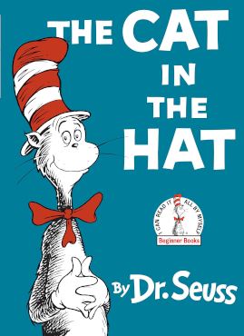
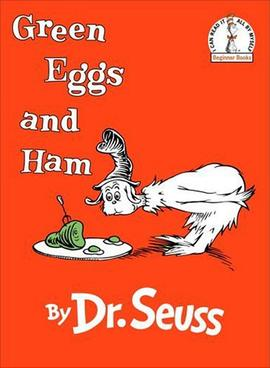

Cat In The Hat
$5.23
The Cat in the Hat is a tall anthropomorphic cat, who wears a red and white-striped hat
and a red bow tie and sometimes has an umbrella with him mostly green,
blue or red. He is a farm cat of Dr. Seuss's short story The Cat in the Hat.
More Details
Dr. Seuss, pseudonym of Theodor Seuss Geisel, American writer and illustrator of immensely popular
children’s books, which were
noted for their nonsense words, playful rhymes, and unusual creatures.
The Giving Tree
$16.99
The Giving Tree is an American children's picture book written and illustrated by Shel Silverstein. First published
in 1964 by Harper & Row, it has become one of Silverstein's best-known titles,
and it has been translated into numerous languages.
More Details
Sheldon Allan Silverstein was an American writer, poet, cartoonist, singer-songwriter,
musician, and playwright. Born and raised in Chicago, Illinois, Silverstein briefly
attended university before being drafted into the United States Army.

Brown Bear, Brown Bear, What Do You See?
$10.99
Brown Bear, Brown Bear, What Do You See? is a children's picture book published in 1967 by Henry Holt and
Company, Inc.[1] Written and illustrated by Bill Martin Jr. and Eric Carle, the book is designed to help
toddlers associate colors and meanings to objects. The book has been widely praised by parents and teachers
and placed on several recognition lists.[2] In 2010, the book was briefly banned from Texas’ third grade
curriculum due to a confusion between author of children’s books Bill Martin Jr, and author of Ethical
Marxism: The Categorical Imperative of Liberation (Creative Marxism) philosopher Bill Martin.[3]
More Details
William Ivan Martin Jr. (March 20, 1916 – August 11, 2004) was an American educator, publishing
executive, and author of more than 300 children's books including The Sounds of Mystery, Chicka Chicka
Boom Boom (co-authored with John Archambault), Brown Bear, Brown Bear, What Do You See?, Baby Bear, Baby
Bear, What Do You See?, Panda Bear, Panda Bear, What Do You See?, and Polar Bear, Polar Bear, What Do
You Hear? (all collaborated with illustrator Eric Carle) The Bill Martin Jr. Award, which is the Kansas
state award for best children's picture book, was established in his honor in 1996.

Green Eggs and Ham
$7.99
With unmistakable characters and signature rhymes, Dr. Seuss’s beloved favorite has cemented its place as a
children’s classic. Kids will love the terrific tongue-twisters as the list of places to enjoy green eggs
and ham gets longer and longer...and they might even learn a thing or two about trying new things!
More Details
Dr. Seuss, pseudonym of Theodor Seuss Geisel, American writer and illustrator of immensely popular
children’s books, which were
noted for their nonsense words, playful rhymes, and unusual creatures.